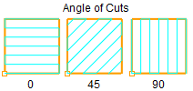

The following Cut Parameters tab allows you to define the cutting parameters for the current 2½ Top Facing operation. You can set Global Parameters, Stepover, Cut Direction and the Cut Area Expansion parameters via this tab of the operation dialog. Refer to each option details below.
Dialog Box: Roughing tab, 2½ Axis Facing Operations |
The Global Parameters section allows you to set the tolerance value to be used in machining. A uniform thickness or stock that needs to be left around the part can be specified here. Tolerance This is the allowable deviation from the actual part geometry plus the Stock allowance (if any). In 2 Axis methods, this Tolerance is applied to XY motions only.  Tolerance
Stock This is the thickness of the layer that will remain on top of the part after the toolpath is complete. Roughing operations generally leave a thin layer of stock. For finishing operations this value is zero.  Stock Compensation This enables cutter compensation. The compensation direction, left or right, is determined by the Cut Direction selected (Climb or Conventional). |

Single Cut Only Check this box to generate a single linear cut. Note: If you wish to clear all stock, make sure the selected tool is large/wide enough to do so. If unchecked, enter the stepover as a distance of as a percent of the active tool diameter. Single Cut Checked
Single Cut Unchecked This allows you to define the spacing between the cuts. Select from the following options: % Tool Diameter Distance |
Select Climb (Down Cut) and the tool will be maintained in a downward motion into the stock. ") Climb (Down Cut) Select Conventional (Up Cut) and the direction of the tool will be maintained in an upward motion out of the stock. ") Conventional (Up Cut) Select Mixed and the direction of cutting is alternated between each parallel plane. This is a mixture of both Climb and Conventional cutting of the stock.  Mixed Specify the Angle of Cuts (0-360) measured from the X Axis. This additional parameter is available for some operations when a linear cut pattern is used.  Computer Optimum Angle of Cuts Check this box to allow the CAM software to determine the optimum angle of cuts. The orientation that gives the minimum bounding box of the area to be machined is automatically calculated. |
The Start Point can be specified as from Top (Max -Y) or Bottom (Max +Y).
|

By default the length and width of the cut is contained to the stock model dimensions. You can expand the length of the cut by specifying a Length Offset (L) that is added to both ends of the stock. Similarly you can expand the width of the cut by specifying a Width Offset (L) that is added to both sides of the stock. Here is an illustration: Cut Area Expansion |